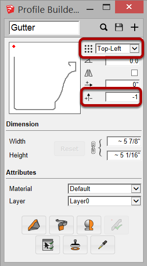
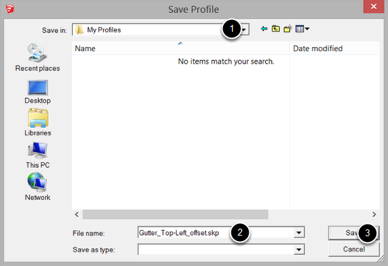
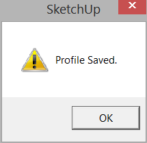

For this profile, the placement point was changed to 'Top-Left' and the Y Offset was changed to -1"

1. Select a Folder to save the Profile.
2. Choose a Name for the Profile. You may wish to use a name that also includes important attrubtes of the Profile.
3. Click 'Save' to save the profile as a SKP file.
